Кореляційний і регресійний аналіз призначені для вивчення за вибірковими даними статистичної залежності ряду величин, серед яких є і випадкові. При статистичній залежності величини не пов'язані функціонально, але як випадкові величини зв'язані сумісним розподілом ймовірностей.
Припустимо, що випадкова величина 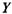залежить від іншої випадкової величини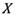 і ця залежність може бути представлена у вигляді функціональної, а саме:
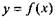 (1)
Наприклад, обсяг продажу продукції, принаймні частково, залежить від рівня рекламної компанії, проведеної підприємством. І тому, затратити на рекламу можуть слугувати показником для можливого прогнозування обсягів продажу продукції.
Регресія і кореляція - це суміжні розділи математичноїстатистики.
Регресія - це вираження кількісного характеру статистичного
зв'язку між залежною і незалежними величинами.
Наприклад, розглянемо просту регресійну модель з однією незалежною змінною. Така модель буде описувати тенденцію у динаміці обох змінних величин (одночасне зростання величин або їх спадання, або зростання однієї, спадання іншої). Крім того, регресійна модель дозволяє визначити кількісний приріст залежної змінної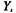 якщо незалежна змінна Х збільшиться на 1.
Кореляція, з іншого боку, дозволяє оцінити ступінь щільності статистичного взаємозв'язку між факторами.
Таким чином, якщо регресія описує в аналітичному вигляді (у вигляді формул) взаємозалежність між двома змінними величинами, то кореляція оцінює міру статистичної взаємозалежності між цими величинами.
Це особливо важливо при встановленні аналітичної форми (лінійна або криволінійна) взаємозв'язку між змінними величинами.
Лінійна регресійна модель намагається зобразити статистичну взаємозалежність між 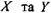 у вигляді прямої лінії. Ця процедура базується на тому факті, що кількісна зміна величний супроводжується систематичною зміною величини у, що може бути графічно відображено у вигляді прямої.
Нелінійна регресія використовується у чому випадку, якщо статистична взаємозалежність між досліджуваними факторами краще описується якою-небудь кривою (гіперболою, параболою, експонентою тощо).

Щоб зрозуміти різницю між лінійною та нелінійною регресією, скористаємося діаграмами розсіювання, представленими на Рис. 1.
Діаграми розсіювання зображують дані спостережень факторів 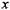 та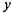 як точки з координатами 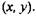
Припустимо, що начальник відділу маркетингу великої кількості підприємств роздрібної торгівлі зібрав дані про рівень продаж та затрат на рекламу товарів своєї компанії за останні кілька місяців. Він намагається використати фактор затрат на рекламу для обґрунтування рівнів продажу товарів. Коли дані спостережень були зображені у вигляді діаграми розсіювання, де рівень продажу - це залежна змінна у, виникло декілька несподіваних варіантів.
Наприклад, зразок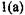показує, що із зростанням затрат на рекламу, зростає і рівень продаж І товару, тоді як рівень продажу падає (дня іншого товару), хоча затрати на рекламу зростають (зразок 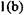).
Па діаграмі 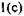чітко спостерігається, що не існує статистичного зв’язку між двома змінними.
Діаграми 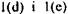 вказують на наявність нелінійної форми взаємозв'язку між величинами.
Зауважимо, що зразки діаграм ніби підказують, якій нелінійній формі зв'язку доцільно надати перевагу,
Наш інтерес обмежується переважно простою лінійною регресією.